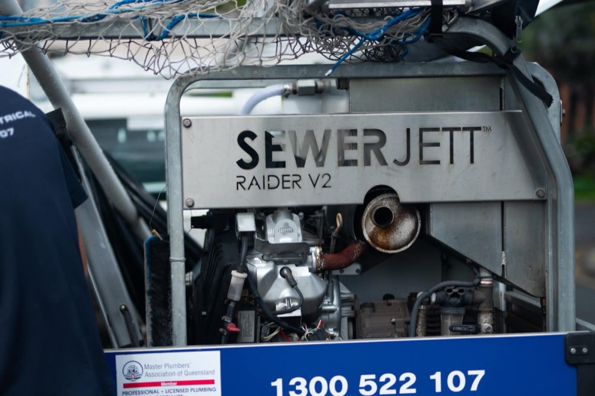

Blocked Drains & Toilets
Blocked toilets, sinks, showers and stormwater lines cleared with the right gear for the blockage, jet rodder included. Then we look at why it blocked, because tree roots, grease and broken pipe don't clear themselves. Cleared with our CCTV and jet rodding combo? We camera the line afterwards to confirm it's clear, and if the same section blocks again within 90 days, we come back and clear it free.